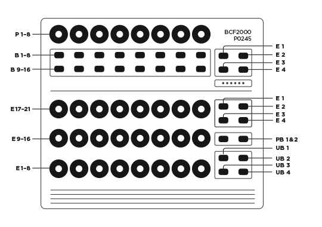

This script works just like a default MIDI Controller script. You are able to assign a CC for each Knob/Button.
Excluding the buttons UB1 - UB4, they are additional grouping buttons now. So now you are able to assign each knob/button
5 times (no UB selected means group 1).
Works only if every control is assigned to a CC, this is preset1 in factory settings.